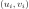
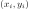
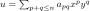
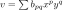
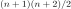
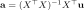
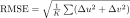
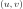

Method
- GCPs: well-defined points (road crossings, corners) with image coordinates

and map coordinates
. - Mapping:

,
. First order (affine, 6 coefficients) handles shift, rotation, scale, skew; second order (12 coefficients) mild curvature. At least
GCPs, in practice many more. - Least squares:

; residuals per GCP,
, target below one pixel on check points not used for fitting. - Resampling: for each output pixel compute

(inverse mapping, so no holes) and interpolate:- nearest neighbour: keeps original DNs (good before classification), blocky;
- bilinear: 4 neighbours, smooth, slightly blurred;
- cubic convolution: 16 neighbours, sharper, may overshoot.
Geocoding: to map coordinates. Registration: to another image (co-registration for change detection). Orthorectification: with a DEM, removing relief.
Example
# affine fit from K ground control points
X = np.c_[np.ones(K), x, y]
a, *_ = np.linalg.lstsq(X, u, rcond=None)
b, *_ = np.linalg.lstsq(X, v, rcond=None)
rmse = np.sqrt(np.mean((X @ a - u) ** 2 + (X @ b - v) ** 2))Intuition
Pin the image to the map at known points, find the smoothest rubber-sheet deformation that fits the pins, and repaint the pixels on the new sheet.
Pitfall
High-order polynomials fit the GCPs perfectly and go wild between and outside them; GCPs clustered in one corner give an extrapolation, not a correction.